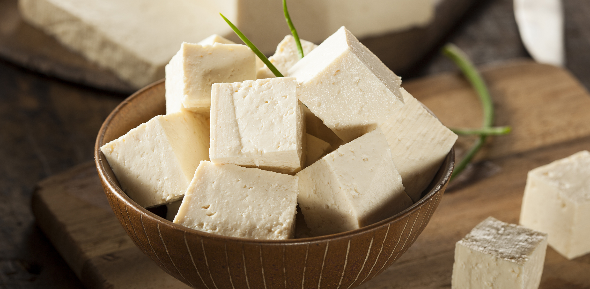

Home
Tofu
Tofu

Description
Tofu is a soft, versatile food made from soybeans, commonly used in many Asian cuisines, especially in China where it originated over 2,000 years ago. It is made by curdling fresh soy milk and pressing it into solid white blocks, similar to how cheese is made. Tofu has a mild flavor on its own, which allows it to absorb the taste of spices, sauces, and marinades very easily.
Because of its high protein content and low calorie level, tofu is a popular ingredient in vegetarian and vegan diets. It can be cooked in many different ways such as frying, grilling, boiling, or blending into soups and stir-fries. Its texture can range from soft and silky to firm and extra firm, making it suitable for both savory dishes and desserts.
Ingredients
- Soybeans
- Water
- Coagulant (such as calcium sulfate or magnesium chloride)
- Tofu (soft, firm, or extra firm)
- Soy sauce
- Garlic (minced)
- Ginger (optional but common)
- Cooking oil (vegetable or sesame oil)
- Salt and pepper (to taste)
Optional ingredients for flavor
- Chili or chili flakes
- Vegetables (bell peppers, broccoli, onions, etc.)
- Honey or sugar
- Sesame seeds or spring onions for garnish
Steps
- Soak soybeans in water for 8-12 hours until they become soft and fully expanded.
- Blend the soaked soybeans with fresh water until smooth to form a thick mixture.
- Strain the blended mixture using a cheesecloth or fine sieve to separate soy milk from the pulp (okara).
- Heat the soy milk in a pot over medium heat, stirring occasionally to prevent it from burning.
- Dissolve your chosen coagulant (such as calcium sulfate or magnesium chloride) in a small amount of water.
- Add the coagulant slowly into the hot soy milk and gently stir once or twice to help curds form.
- Let the mixture sit undisturbed for 15-20 minutes so the curds fully separate from the whey.
- Pour the curds into a tofu mold lined with cheesecloth.
- Press the tofu to remove excess liquid, adjusting pressure and time depending on whether you want soft, firm, or extra firm tofu.
- Remove the tofu from the mold and soak it in cold water before storing or cooking.
- Drain the tofu and cut it into cubes or slices depending on your preference.
- Pat the tofu dry with a paper towel to remove excess moisture for better frying.
- Heat cooking oil (vegetable or sesame oil) in a pan over medium heat.
- Add the tofu and fry until golden brown on all sides, turning gently to avoid breaking it.
- Remove the tofu from the pan and set it aside.
- In the same pan, add a little more oil if needed and sauté minced garlic and ginger until fragrant.
- Add vegetables such as bell peppers, broccoli, or onions if using, and stir-fry until slightly tender.
- Return the fried tofu to the pan and mix everything together.
- Add soy sauce, salt, pepper, and optional chili or chili flakes for spice.
- Stir well and cook for another 2-3 minutes until everything is evenly coated and heated through.
- Turn off the heat and garnish with sesame seeds or chopped spring onions before serving.